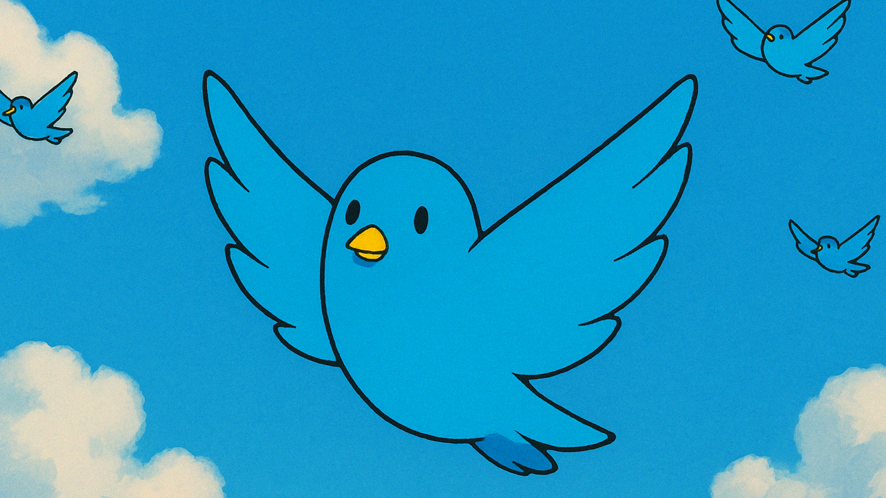
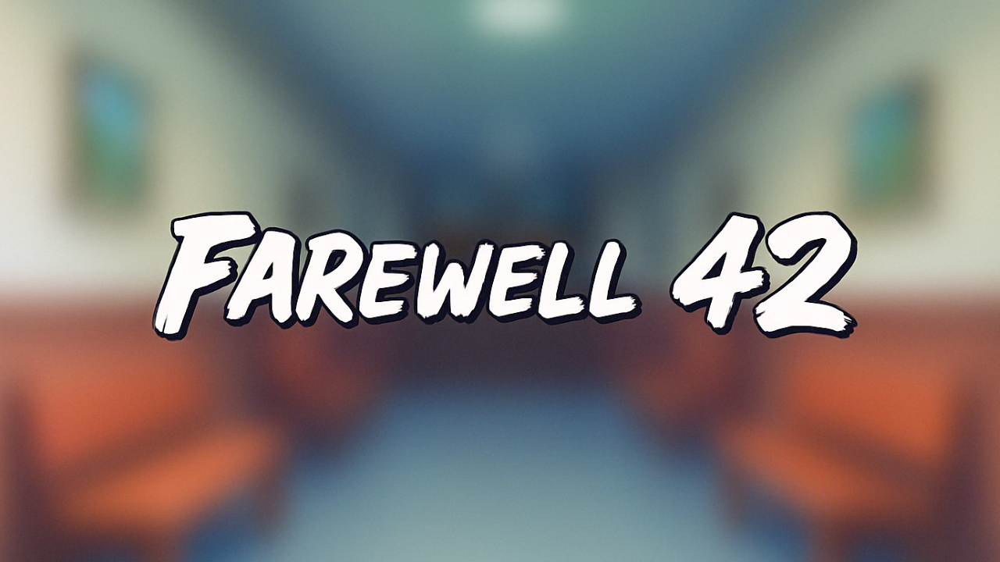
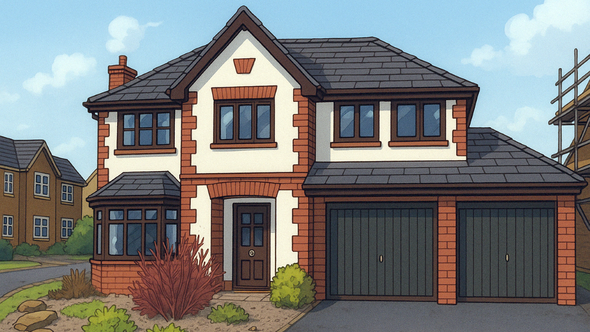
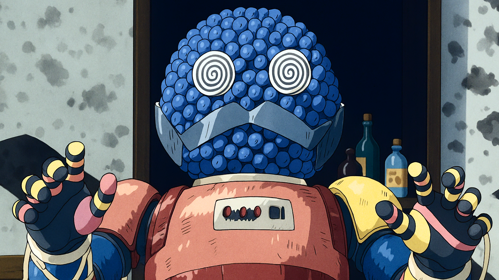
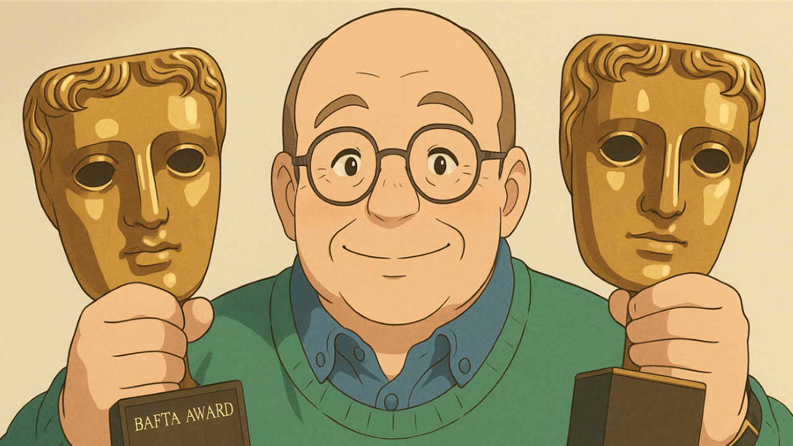
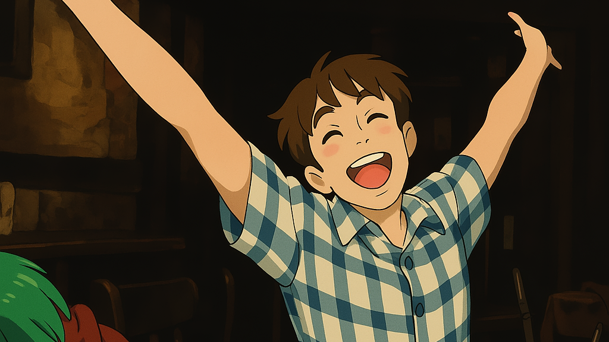
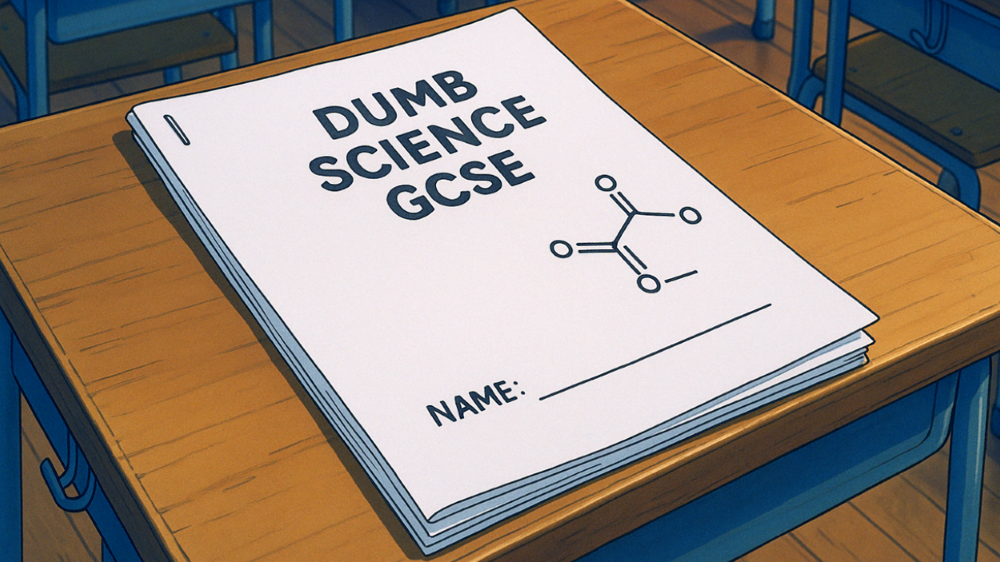
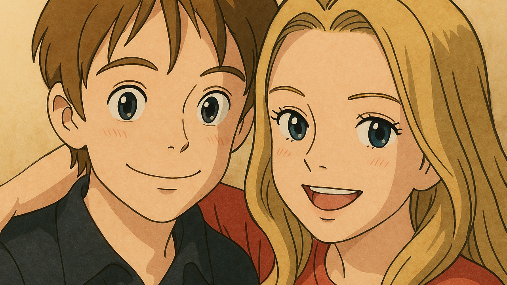

Old Tweets
27 October 2024
Unearthed a bunch of my tweets from 2019 and 2020:
2019 tweets
2020 tweets
Making Music (Farewell 42)
3 April 2024
Currently listening to Farewell 42, an AI-generated song of mine. I saw someone post an AI-generated song on Twitter the other day and I had to give it a go. Ended up buying a load of credits, so I’ve had a blast generating a few different songs.
You can input a prompt and it’ll make an entirely new song from scratch, complete with vocals, in a genre of your choice. You can also input your own lyrics. I decided to generate a punk rock song about Charlotte’s old school-era band, The Farewell 42s.
Scaffolding
13 February 2016
My week has consisted of scaffolding, online dating, spring cleaning and a Cyberman bust. One night last week part of our roof fell off so we’re having renovations done. The house is covered in scaffolding and it’s serving as a nice visual metaphor of my life at the moment. I spent Monday quite excited tbh, having met a really great girl online, but come the middle of the week she seemed to be totally uninterested in me, yay. So I perked myself up, between eating myself into comas and job hunting, by ordering an 80s Cyberman bust from Forbidden Planet. Frankly, it’s way more gorgeous than any girl will ever be so whatevs.
And today I’ve spring cleaned most of the house, top to bottom, because I’m an adult or something. That crept up on me and now it’s just constantly happening. And I’m blogging again. Legit blogging here on Tumblr, reclaiming it back one letter at a time from those who just reblog endless photos of food and cats dressed up as Olaf from Frozen.
I’ve kind of become disillusioned with Twitter lately, so I’m going to hide out here for a while. As long as I avoid the majority of the rest of Tumblr, I’ll be fine. I like it here.
Those Behind the Masks
12 April 2014
Over on the Gallifrey Base forums, a member posted a topic about the Kandyman. His question was, ‘Should the Kandyman have been a more human creation?’ Those who know me well enough will know I’m a huge fan of Mr K so this question drew me in.
I was torn. I love the Kandyman as is – he’s deliciously surreal and bizarre and creepy – but I do think it would’ve been interesting had they gone with the original idea of having a human figure instead. I’m picturing a Willy Wonka-esque nutter, perhaps in a lab coat draped in sweets. And, just as a bonus, imagine if said actor was Gene Wilder. I think that’d be glorious.
In any case, I love the Kandyman. And, further into the thread, we started discussing how, sometimes, we tend to forget or gloss over actors in the costumes. We often talk about recognisable people (Michael Wisher and Terry Molloy, for example) but sometimes we forget to acknowledge or really credit those people who sweated like crazy in the unforgiving costumes. All those Silurians, Sea Devils, Zygons, Daleks, Cybermen, Mandrels, Sontarans... and, of course, the Kandyman himself – Mr David John Pope.
When I first bought the DVD of The Happiness Patrol, I fell in love with the story immediately. For a while, I hailed it as my favourite Doctor Who story. It’s definitely still up there (I only wish there was an extra episode, with more Kandy screentime). During my period of Kandymania, I decided to head over to eBay and, once there, I purchased a Kandyman ‘Harlequin’ figurine. It was already painted, and I wanted to display it proudly on my DVD shelf.
So I won it, I paid, and it arrived... but in with the figure, in the package, was a photo of the Kandyman which had been signed by David John Pope himself. At first, I thought it was a mistake. Maybe I’d been sent something that wasn’t mine (after all, many people flog autographs and photos on eBay separately), so I contacted the seller to ask. Turns out the seller was none other than David John Pope himself (!) and he’d sent the autographed photo as a bonus little extra, free of charge. I was speechless and overjoyed! I messaged him back, thanking him, and I told him how I adored the Kandyman and the story he featured in.
Looking back, I’m still a little speechless. It was totally unexpected and a wonderful surprise, and it made me realise that there’s far more than just what we see on screen. Behind every heavy costume and ill-fitting rubber mask, there’s a person, an actor, and I don’t think they always get the praise and credit they deserve. We rightfully whoop and cheer the writers, directors, producers and leading actors, but let’s not forget the rest of the gang too.
So here’s to David John Pope, and to everyone else behind those costumes and masks for the sake of giving us some wonderful Doctor Who!
Bob Baker • Interview
16 February 2014
This interview was conducted via email for Celebrate Regenerate.
Bob. First of all, thank you for agreeing to this interview. It’s a privilege for me considering I’m a huge fan.
First up, Doctor Who. You’re well known for co-writing The Claws of Axos, The Mutants and The Three Doctors for Jon Pertwee’s Doctor. How did you and Dave Martin prepare yourself for writing your first few serials together, and were you both fans of the show prior to joining the team?
Dave and I began writing as a partnership some years before writing The Claws of Axos. We’d done a serial with HTV and a single play, plus tons of ideas and work that was rejected. We felt perfectly prepared to write for Doctor Who. In my opinion, it was the BBC who weren’t prepared for us!
In 1972, The Three Doctors began airing. How did this particular serial come to land in your hands, and how did you and Dave feel whilst writing it? Were there any pressures, considering the event? What are your thoughts now on the final result?
Terrance Dicks, the script editor of Axos and Mutants very kindly asked us to submit a story for the anniversary. We were duly flattered by his and Barry Letts’ faith in us. As far as writing it was concerned, as usual, we really enjoyed researching about black holes, a pretty recent discovery at the time. We felt the result was good, character-wise. There was a greater interaction between Pertwee and Troughton; pity about poor old William Hartnell. His part was cut to a bare minimum. The only down side was the Gell Guards. They looked silly.
Moving on to Tom Baker’s Doctor, you were involved with six scripts. One saw the departure of Lis Sladen’s Sarah Jane (The Hand of Fear) and another saw the introduction of everyone’s favourite dog, K9 (The Invisible Enemy). Did you know K9 would become a regular character during the scripting stage? And how do you feel about K9 having later been brought back and ‘paired up’ with Sarah Jane in her own spin-off/s?
We had no idea the K9 would be taken on as a regular character, but were of course delighted when Bob Holmes told us they wanted to make him a regular. This was well after we’d written the script. I think the decision was made during the filming.
We had no objections whatsoever for K9 to be ‘paired off’ with Sarah Jane (in K9 and Company); what made us angry about this series was that (a) we weren’t even asked to submit an idea for our own character and (b) we felt that the script was thin and that K9 had not been used to the best effect. John Nathan-Turner wanted K9 out of Doctor Who. For us, K9 and Company was the perfect way to destroy any chance of revival.
Happily, the mutt had built up a pretty big fan base and did come back in School Reunion.
Season 17’s Nightmare of Eden was your solo (and final) script for Doctor Who. Was the experience very different without Dave co-writing? And, following that, if given the chance, would you accept an offer to write for the modern series on TV?
Since Dave and I had very recently gone our separate ways, I somehow didn’t miss him. I threw myself into researching for the story. My greatest problem was that I was script editing on ‘Shoestring’ at the same time and had to find time for the Doctor Who script. All I can say is that I thoroughly enjoyed writing that one.
I would love to write for the modern series, but there seems to be a ‘no oldies’ ban on at the Doctor Who production office. I did ask when the Tennant series started, but was given a firm ‘no.’ On the other hand it’s good to get new young writers in on the show. I’m not bitter in any way.
Back to K9, and fans of yours will know about his very own TV series. How did the idea for this originally come about, and what inspired the ‘regeneration’ and design change for the robot dog?
It was around 1990 when I had a phone call from Paul Tams, who’d been a designer and illustrator for Who. He suggested the idea of redesigning K9, making him into a revamped character. I wasn’t too keen to begin with but I didn’t have much else on at the time, so I thought why not. The idea was that K9 has (on Gallifrey with Leela and the Time Lords) been given a ‘regeneration capability’ just like the Doctor. I thought if the Doctor can, why not K9?
One of my main concerns was that K9 had always been floor-bound (in our original draft of The Invisible Enemy we stipulated that K9 hovered, but it was beyond the BBC SFX team at that time). Actors, and especially Tom Baker, hated having to kneel or lie down to interact with K9, so I was keen on getting K9 into CGI and being able to float around at face level. Also to expand K9’s character envelope and make him star of his own show (something a lot of writers couldn’t get their heads around). It took a gruelling eleven years to get a series going, but finally did it in Oz.
Paul and I are in process of getting another series going. Hope it doesn’t take another eleven years!
In addition to K9, another dog you’re known for writing for is Gromit, along with owner Wallace. Personally I’m a huge Wallace and Gromit fan and I love all of the episodes to date, my favourite being The Wrong Trousers. How did you first get involved with the show and Nick Park, and do you have a particular favourite episode, scene or character?
I knew the Aardman team before Nick Joined them. I was highly impressed by the work they’d done and as I was working at HTV at the time. I tried hard to get them involved in something. All l I got was a tiny bit in ‘Into the Labyrinth’. When Nick joined Aardman the BBC wanted to do some follow-on stories from A Grand Day Out, and felt getting a writer in would be a good idea. I got on well with Nick and we launched in The Wrong Trousers. Imagine my shock and delight when it won an Oscar! This led, of course, to the other stories and the movie.
I think my most favourite sequence is Wallace’s romantic scene with Wendoline. With Gromit cleaning the window on a bungee rope. Ending with, ‘the bounce has gone from his bungee.’ But there are many others just as memorable.
Also, I have to ask, is there any chance we’ll get a Wallace and Gromit / K9 crossover at any point? If not, I’d like to at least register my interest in such an episode!
You’d have to ask Nick Park about that...
And finally, how do you feel having been a part of three wonderful shows, including Doctor Who which is now still going as strong as ever?
I feel very grateful to have had such a varied career, but I’m still working, so you never know – there might be another show to add to the list!
Bob Baker, thank you very much!
Reflecting on 2012
31 December 2012
I find the notion of ‘the best year’ in your life quite silly (every year is extremely different, and every experience enhances your life or affects you somehow) but, in terms of my creative writing portfolio, 2012 has been my most successful year.
I finished my first year of university and levelled up to the second, and I’ve been published twice - once on The Pygmy Giant and once in an actual book! In addition, I also started up my Celebrate Regenerate project which has taken off better than I ever could’ve expected.
Not only that, but I’ve emailed various Doctor Who writers, directors and producers who have said they’d be happy to do interviews for the book. That’ll be happening, hopefully, in January 2013 and if that wasn’t enough I’ve also been given the opportunity to work with Doctor Who Adventures magazine in February 2013 too! Both of these, though happening next year, were planned and arranged this year and therefore contribute to my 2012 portfolio.
Stupid Exam Questions
16 March 2012
Casually looking back through my diary and I came across something rather genius – my final ever GCSE exam question.
It was on a science paper and I’d happily written ‘not got a clue’ under most of the questions before I turned over to the last page. You know the one – the one before the page which says ‘Blank Page’. (Never quite worked that one out.)
The final question revolved around the concept of friction and momentum. Fair enough, it’s a science paper, and friction is a science-y thing… but then came the scenario / question (complete with a diagram, I should add)...
“Frank is doing an experiment. He is in an ice rink with a box, and his friend sits in the box. Frank then drags the cardboard box around the ice rink. What happens to his friend?”
...what.
Living in Student Flats
2 March 2012
Living in student flats is often quite shit due to cuntish people making shitloads of noise, and generally being arseholes. The guy in the room above me, especially.
But tonight, as I’m feeling the lowest I’ve felt for a long time, all I can hear is someone playing the guitar and I love it. It’s keeping me sane. I just want to go and hug whoever it is and say thanks.
English Language and Literature Prospectus
Sep 22, 2011
English Language and Literature at Nelson and Colne College Sixth Form